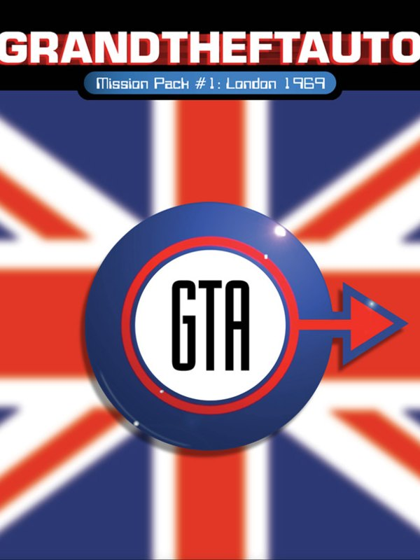

How to enter
Enter the code as your player name, then start the game.
Player-name codes change that save, so use a separate name for cheating.

Enter the code as your player name, then start the game.
Player-name codes change that save, so use a separate name for cheating.
Requirement: Press * on the numeric keypad in game to get the weapons.
PC also accepts asawindow.
Requirement: Press * on the numeric keypad in game to get the weapons.
PC also accepts super well and travelcard. PlayStation also accepts READERWIFE.
Codes last checked against sources on .
Wrong or missing code? Use Report on the cheat, open an issue or send a pull request on GitHub. Each game is one JSON file.